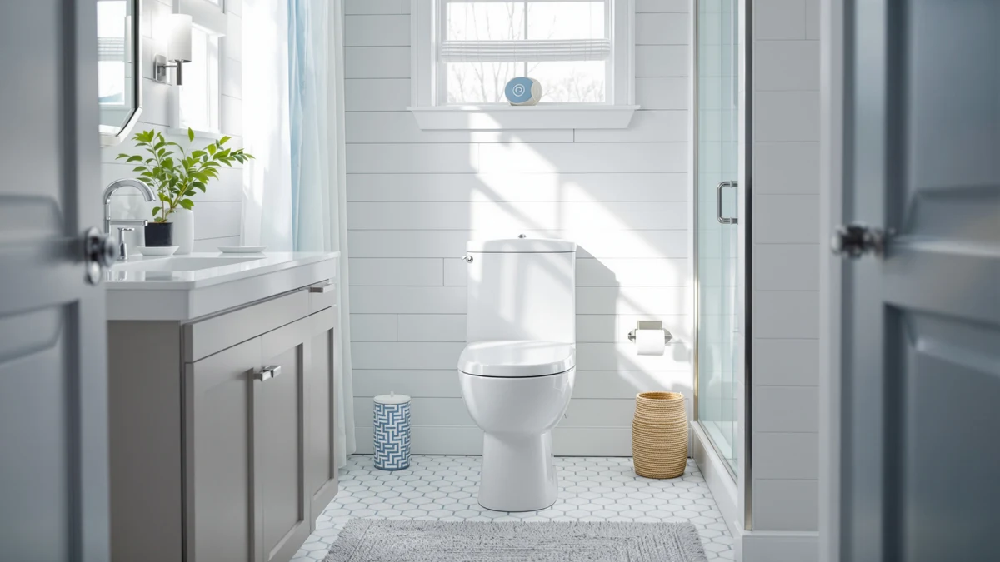

WinZo Compact One Piece Review (2026): Worth It?
Prices and picks verified as of October 2026. Independent, reader-supported reviews.


Quick Answer
The WinZo Compact One Piece Toilet costs $328.99 and is built as a one-piece design sized for smaller bathrooms. This WinZo Compact One Piece review compares it against three alternatives, including a bidet-equipped smart toilet from Glendan, a standard model from WOODBRIDGE, and an ADA-height elongated toilet from Vomlor, none of which has built up a public review history yet, so the deciding factors come down to price, footprint, and features rather than star counts.
Our pick: WinZo Compact One Piece Toilet, $328.99 Check Price on Amazon
Bottom line: our top pick is the WinZo Compact One Piece Toilet 22.8" Depth Modern Short at $328.89.
Things to Know Before You Buy
- WinZo prices the Compact One Piece Toilet at $328.99, placing it in the middle of the four toilets covered in this WinZo Compact One Piece review.
- It's built as a one-piece design sized for smaller bathrooms, so the tank and bowl are molded together with a smaller footprint than a standard elongated model.
- Three alternatives from Glendan, WOODBRIDGE, and Vomlor range from $320.99 to $339.99 and cover a smart bidet-equipped model, a standard one-piece toilet, and an ADA-height elongated design.
- None of the four toilets in this comparison has built up a public rating or review count yet, so weigh the published price and features against that missing track record.
This WinZo Compact One Piece review breaks down whether WinZo's $328.99 toilet earns its price against three alternatives we compare it against on this site: toilets from Glendan, WOODBRIDGE, and Vomlor. WinZo builds this toilet as a one-piece design with a compact footprint, molding the tank and bowl into a single piece and sizing the bowl for bathrooms where floor space between the fixture and the wall is tight. We pulled together everything WinZo publishes about this toilet, its price, and its category, and set it beside three direct competitors so you can see exactly where your money goes.
The short version: if you want a one-piece toilet with a smaller footprint specifically from WinZo and don't mind paying a mid-range price for it, the $328.99 WinZo Compact One Piece Toilet is a straightforward pick. But the WOODBRIDGE One Piece Toilet undercuts it by $8.00 at $320.99, the Glendan Smart Toilet with a built-in bidet costs only $4.00 more at $332.99 and adds bidet functionality, and the Vomlor 19-inch ADA Height Elongated toilet runs $11.00 higher at $339.99 with a larger, accessibility-focused bowl. Pick WinZo if a compact footprint is what you need. Pick one of the three alternatives below if price, bidet features, or a larger bowl matters more. Every model in this comparison lands within about $19 of each other, so the decision mostly comes down to footprint and features rather than a steep price jump.
Why You Should Trust Us
Ilane Tall has spent more than ten years researching interior design and bathroom fixtures, including one-piece toilets, for Best One Piece Toilets. She built this WinZo Compact One Piece review by comparing WinZo's own published listing against the three closest competitors on price and category, the same specification-comparison process the site uses for every review. We do not accept payment from WinZo, Glendan, WOODBRIDGE, or Vomlor to influence placement, and our Amazon links earn a commission only if you buy, which does not change what we recommend. Every price, product photo, and specification cited in this WinZo Compact One Piece review comes directly from the manufacturer's own Amazon listing, not from a press sample or a sponsored placement.
How We Compared
For this WinZo Compact One Piece review, we started with WinZo's own product listing: the five product photos, its $328.99 price, and its compact, one-piece category. We then lined up WinZo against the closest one-piece toilets already covered on Best One Piece Toilets, narrowing the field to the Glendan Smart Toilet with a built-in bidet, the WOODBRIDGE One Piece Toilet, and the Vomlor 19-inch ADA Height Elongated toilet, all priced within about $19 of WinZo's model. None of the four has built up a public review history yet, so we weighted our evaluation toward the facts we could verify: published price, product category, and brand, rather than guessing at long-term durability we cannot confirm firsthand. That gap is also why we lay out each toilet's documented price and category side by side instead of ranking them on star counts that don't exist yet. We update this WinZo Compact One Piece review whenever Amazon changes any of the four listed prices, so the figures above reflect what each seller was charging at the time of our most recent check. We treat a product photo count and a documented category as useful signals, but we never substitute them for a verified review history that doesn't exist yet, and we say so plainly whenever it applies.
Overview & Specs

WinZo Compact One Piece Toilet
What we like
- One-piece design molds the tank and bowl together, removing the seam where grime collects on a two-piece toilet
- Compact footprint fits bathrooms where floor space between the bowl and the wall or vanity is tight
- Listing includes five product photos showing the toilet from multiple angles, giving a clear look at the finish before you buy
- Costs less than both the Glendan smart toilet and the Vomlor ADA-height model in this comparison, despite its space-saving design
Flaws but not dealbreakers
- Priced $8.00 higher than the WOODBRIDGE One Piece Toilet, the least expensive alternative in this comparison
- No public rating or review count yet, so you're relying on WinZo's own listing rather than verified buyer feedback
- WinZo's listing doesn't specify rough-in distance or seat height, so confirm those measurements with the seller before you order
| Material | — |
| Size | — |
WinZo builds this one-piece toilet around a compact silhouette, molding the tank and bowl into a single piece rather than bolting two parts together. That single-piece build removes the seam between tank and bowl where grime typically collects on a two-piece toilet, and the smaller footprint is sized for bathrooms where a standard elongated bowl would crowd the room. At $328.99, it lands in the middle of the four toilets in this WinZo Compact One Piece review, cheaper than the Glendan and Vomlor alternatives but priced above the WOODBRIDGE model.
WinZo hasn't published a rough-in distance, seat height, or flush rating for this specific listing. If those measurements matter to your bathroom, reach out to WinZo or the Amazon seller before you buy rather than assuming this model matches a standard 12-inch rough-in. WinZo does document the compact, one-piece category and the $328.99 price, backed by five product photos showing the toilet from multiple angles. It also hasn't built up a public review count yet, so weigh that documented footprint against the missing track record before you commit.
What We Liked
The WinZo Compact One Piece Toilet's biggest strength is its space-saving, one-piece build. Molding the tank and bowl together removes the seam where grime collects on a two-piece toilet, and the compact footprint sets it apart from the larger profile of the Vomlor ADA-height model in this comparison. WinZo backs the listing with five product photos from multiple angles, giving you a clearer look at the toilet's finish and shape than some competing listings offer. A one-piece toilet like this one also tends to install with fewer separate parts than a two-piece model, which can simplify a bathroom renovation, a detail worth keeping in mind in this WinZo Compact One Piece review even before you compare it against the three alternatives below.
What Could Be Better
The biggest drawback in this WinZo Compact One Piece review is that the compact footprint comes at a price premium over the field's cheapest option. At $328.99, this WinZo model costs $8.00 more than the WOODBRIDGE One Piece Toilet, though it still undercuts both the Glendan smart toilet and the Vomlor ADA-height model. WinZo also hasn't listed a rough-in distance, seat height, or flush rating anywhere on this listing, so you can't line up those specs against the alternatives without contacting the seller first. The toilet has not accumulated any public rating or review count either, so we can't confirm long-term durability or real-world flush performance beyond what WinZo's own listing describes. None of that erases the compact design or the single-piece build that make this toilet appealing, but factor those gaps into your decision against the alternatives below. If the flush rating and rough-in distance are dealbreakers for your renovation timeline, contact WinZo through the Amazon listing before you order rather than guessing at compatibility.
Who Is It For?
This toilet fits buyers who need WinZo's compact, one-piece footprint badly enough to pay more than the cheapest option in the group for it. Anyone renovating a small bathroom where a standard elongated bowl would crowd the room will find it an easy fit. Shopping mainly on price? The WOODBRIDGE One Piece Toilet in this WinZo Compact One Piece review covers similar one-piece ground for $8.00 less. Want bidet functionality bundled in? The Glendan smart toilet costs only $4.00 more and adds that feature. And if you'd rather lean on verified buyer reviews before spending on a toilet, hold off, since none of the four models here has built up that history yet. Buyers who need ADA-height seating or a larger bowl may also prefer Vomlor's elongated design over WinZo's space-saving shape, since WinZo doesn't market this model on accessibility.
Alternatives to Consider
If the price premium over WOODBRIDGE, the missing bidet features, or the compact bowl gives you pause in this WinZo Compact One Piece review, these three toilets from Glendan, WOODBRIDGE, and Vomlor cover smart, standard, and ADA-height elongated ground at different prices.

Editor’s Pick
Smart Toilet with Bidet Built-in:
Glendan's smart toilet costs only $4.00 more than WinZo's compact pick and bundles in a built-in bidet, worth considering if you want bidet functionality without buying a separate attachment.
$332.99
Check Price on Amazon
Best Value
WOODBRIDGEE One Piece Toilet with
WOODBRIDGE undercuts WinZo's compact pick by $8.00, the lowest price in this comparison, worth a look if a smaller footprint isn't a priority.
$320.99
Check Price on Amazon
Premium Choice
Vomlor 19" ADA Height Elongated
Vomlor's 19-inch ADA-height elongated toilet runs $11.00 higher than WinZo's pick and trades the compact footprint for a larger bowl and easier-access seating.
$339.99
Check Price on AmazonFrequently Asked Questions
Is the WinZo Compact One Piece Toilet worth $328.99?
It's worth $328.99 if you want WinZo's space-saving, one-piece profile specifically for a smaller bathroom. If price matters more than the compact footprint, the WOODBRIDGE One Piece Toilet in this WinZo Compact One Piece review saves you $8.00 at $320.99.
How does the WinZo Compact One Piece Toilet compare to the Glendan Smart Toilet with Bidet Built-in?
The Glendan smart toilet costs $332.99, only $4.00 more than WinZo's $328.99 compact model, but it adds a built-in bidet and smart features that WinZo's listing doesn't include. Choose Glendan if you want bidet functionality bundled in, and choose WinZo if a smaller footprint matters more than extra features.
Should I choose a compact or a standard one-piece toilet?
Choose a compact model like WinZo's if your bathroom has limited floor space between the bowl and the wall or fixtures. Standard and ADA-height elongated models, like the Vomlor 19-inch toilet in this comparison, give you a larger seating area and easier access, but take up more room.
Final Verdict
This WinZo Compact One Piece review comes down to a straightforward trade-off. WinZo's one-piece toilet delivers a space-saving build at $328.99, a mid-range price among the four models we compared, and without the public review history that would let us confirm long-term durability firsthand. If a compact footprint matters most for your bathroom, this WinZo model is a sound buy at that price. If you'd rather save money, add bidet functionality, or get a larger ADA-height bowl, the WOODBRIDGE, Glendan, and Vomlor alternatives above are worth a look.